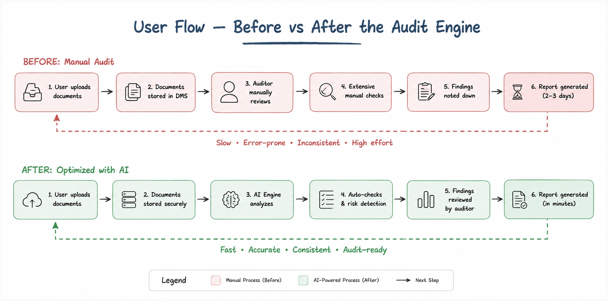
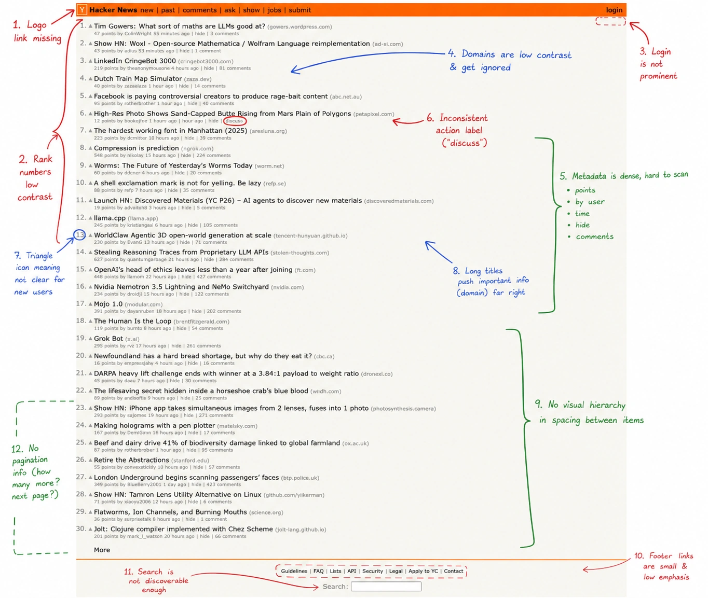
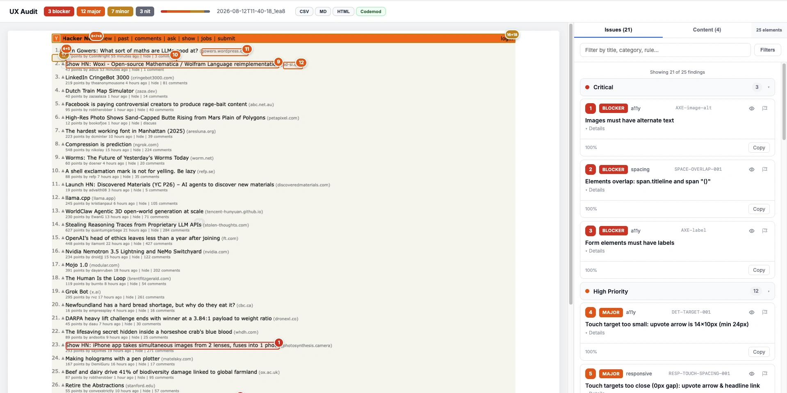
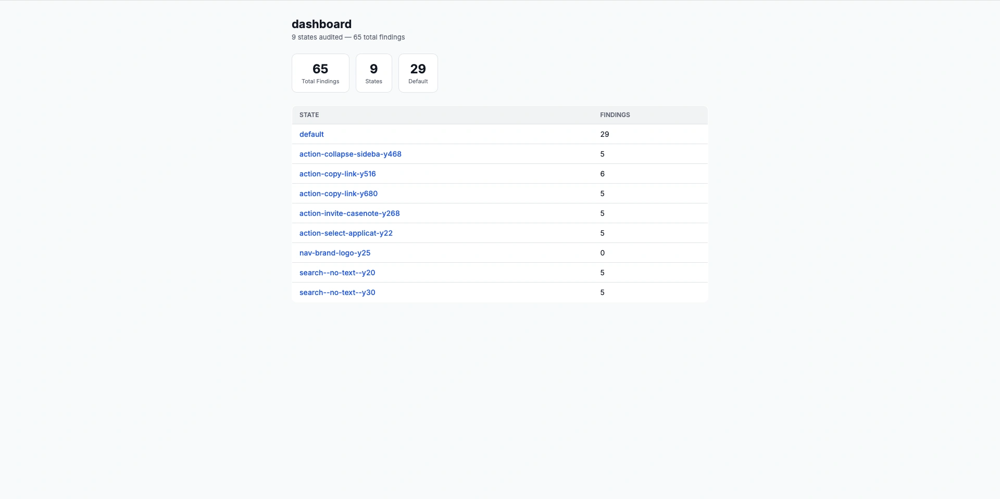
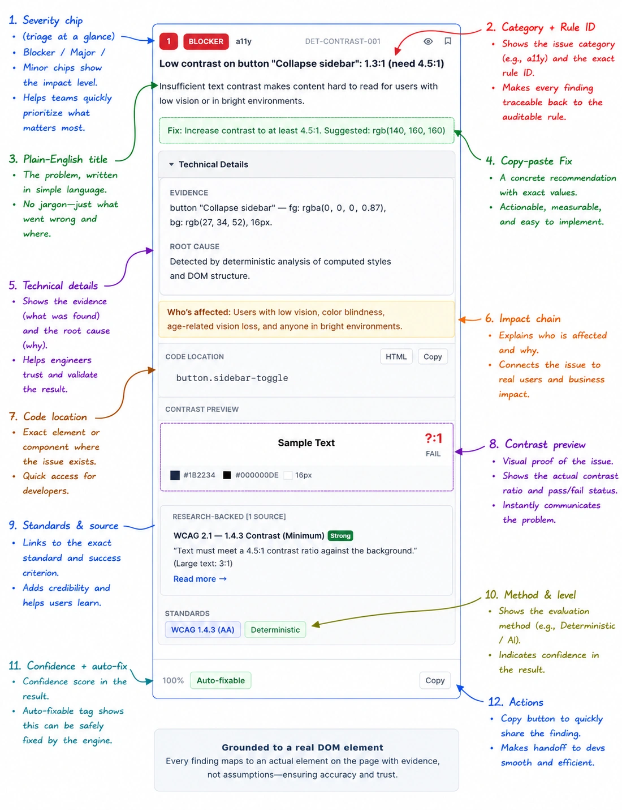
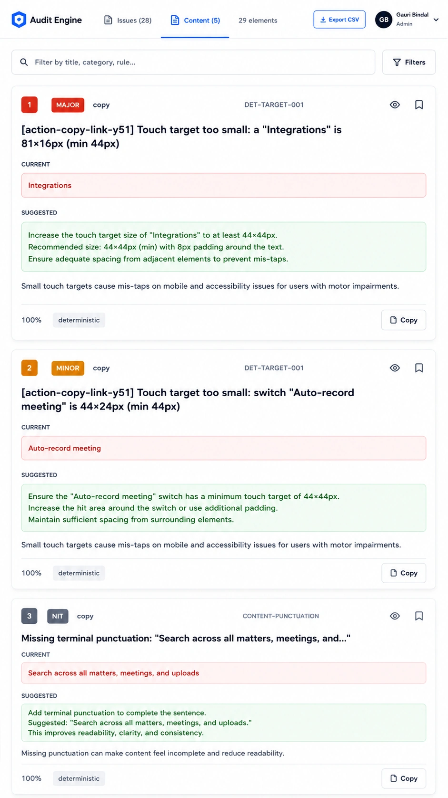
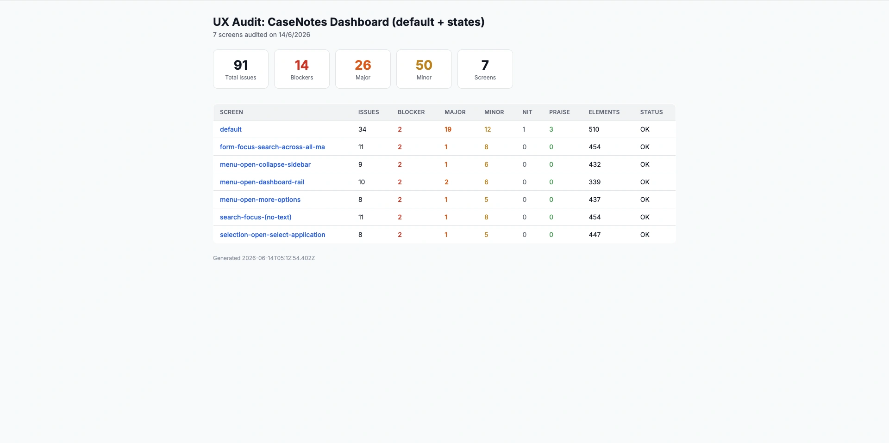
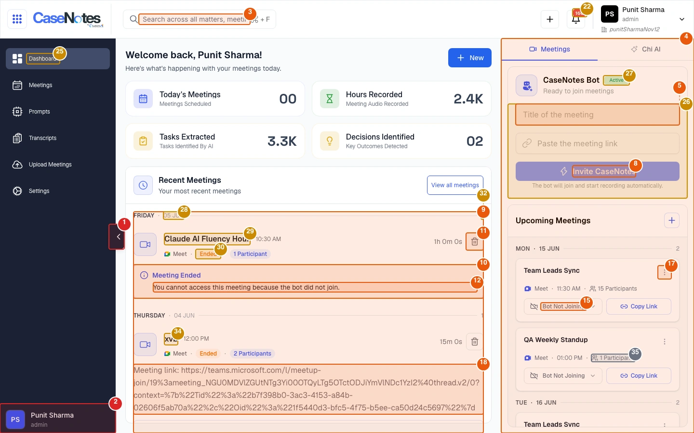
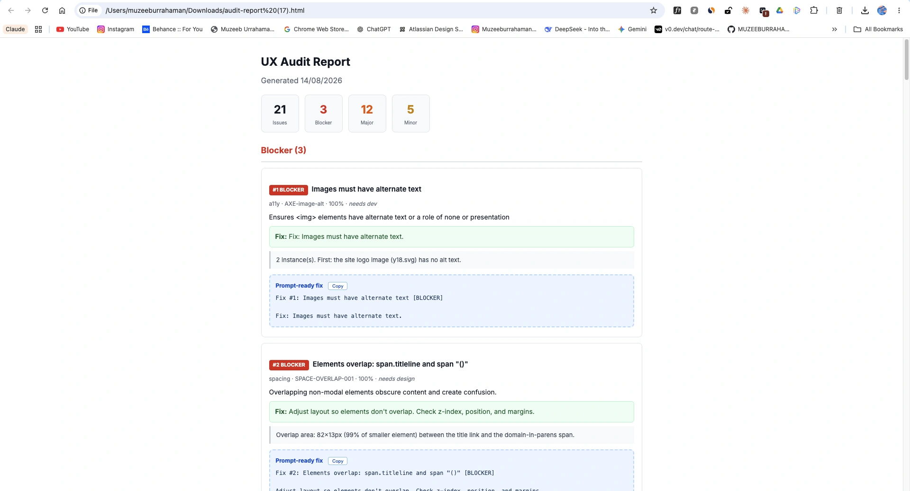
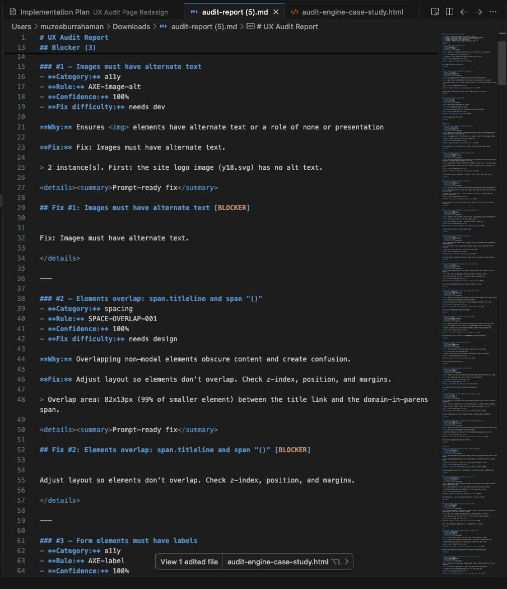

At Omnis AI, I was the solo product designer across five legal-tech products. Manual staging reviews were slow, inconsistent, and broke at scale — so I built an engine that logs in, explores every state, and ships developer-ready reports at ~$0.30 a screen.
Point it at a product URL with credentials. It logs in, walks every screen, explores every interactive state, and produces a self-contained report — one numbered box per problem.
At Omnis AI I was the solo product designer across five legal-tech products, asked to manually audit our live staging apps screen by screen. That's slow, inconsistent, and doesn't scale — so instead of doing it by hand forever, I built the thing that does it for me.
A typical audit meant opening screens one by one, taking screenshots, annotating problems in Figma, checking interactions, and documenting everything for engineering. Then the cycle restarted after fixes. As the number of products grew, I became the bottleneck.
They were behind it.
A default dashboard could look perfectly fine until you opened a filter, triggered an error, expanded a menu, submitted an incomplete form, or hit an empty state.
Those hidden states were the ones most likely to be skipped during a manual review — and they were the ones that shipped broken.
That changed the problem. I wasn't trying to build a faster screenshot reviewer. I needed a system that could explore the product itself.
Not just the default screen — every state behind every control.
A convincing explanation isn't enough. Every finding needs evidence tied to a real element.
The output has to explain what's wrong, where it is, and what to do next.
More findings don't help if half are wrong. The system had to earn trust, not just produce volume.
And the one I replaced it with.
| Dimension | Before · manual | After · the engine |
|---|---|---|
| Time per screen | ~2–3 hrs of a senior's day | ~3 minutes |
| Cost per screen | ~$400 (est.) | ~$0.30 |
| Interactive states | Usually skipped | Every state captured |
| Consistency | Varies by reviewer | Identical, rule-based |
| Coverage record | None | "N elements, 0 skipped" |
| Dev handoff | Static image + Q&A | Selector + copy-paste fix |
| Re-audit after a fix | Full manual redo | One command; shows deltas |



The first version analyzed static screenshots. It was exciting because it produced findings quickly — feed it a page, get back a list of problems in seconds.
Then I ran it against a screen I already knew cold. It came back confident: "Low contrast on the secondary button beside the search field." Specific coordinates, a severity chip, a suggested fix — it read like a real finding.
There was no secondary button there. The model had pattern-matched on how that region of the layout usually looks in a dashboard and described a button that didn't exist on that screen. It wasn't a one-off — once I started checking, a slice of the "findings" were confident descriptions of elements the DOM had no record of.
That's the moment the project actually changed. A tool that occasionally invents problems isn't faster than a manual audit — it's slower, because now every finding needs a human to go verify it first. Volume wasn't the product. Trust was.
That forced a fundamental rethink. Instead of asking "how many issues can the AI find?" I started asking "can I prove this issue exists?"
That question had one honest answer: not yet. So I introduced a hard constraint:
If a finding can't be tied to a real DOM element, it doesn't ship.
That single decision pushed the product toward live DOM access, element coordinates, verification, and grounded findings. The system wasn't just looking at an interface anymore. It was building evidence about it.
That constraint didn't stay theoretical for long. Grounding a finding on a real element meant the engine needed what a real user has — a live session, a live DOM, live coordinates — not a screenshot to squint at. So today it behaves less like a scanner and more like a very thorough, very patient teammate working the product screen by screen:
One screen in, an interactive map of the product out — nothing skipped, because nothing is ever assumed.

Each finding carries a severity chip for triage, the category + rule ID so it traces to the exact rule that fired, a plain-English title, a Why → How → Impact reasoning chain that names the exact principle, a copy-paste Fix, a confidence score, and a Copy-as-markdown button. A finding missing any of these is rejected before it reaches the card.

The engine (ux-audit-mcp) does capture + analysis. The service (ux-audit-service) turns it into a multi-product dashboard with CI.
| Layer | Technology |
|---|---|
| runtime | Node + TypeScript, Model Context Protocol (MCP) SDK |
| capture | Playwright — login, full-page screenshots, DOM inventory, state exploration |
| a11y | @axe-core/playwright — the axe engine, live per page |
| ai-vision | OpenAI-compatible SDK → Gemini Flash / OpenRouter (multi-provider + fallback) |
| image | Sharp (annotation), tesseract.js (OCR snapping), pixelmatch (diff) |
| service | Next.js 16, React 19, Tailwind 4 · Prisma 7 + Postgres · BullMQ + Redis · GitHub Actions · Docker |
A deliberate product decision: the same underlying findings are presented six ways so each role gets exactly what it needs.
These aren't hypothetical: the real CaseNotes audit split 89 findings into 35 deterministic, 45 AI, and 22 content issues — three tracks a developer, a designer, and a content writer would each open separately, and each walk away with only the dozen or so findings that were actually theirs to fix.



The easiest thing to optimize was volume — more rules, more findings, more AI suggestions. But a system that creates 500 findings isn't useful if a reviewer has to verify whether 300 of them are real.
So the design shifted from more findings to more trustworthy findings.
CaseNotes (our own staging app): an early 4-screen audit found 89 issues across 22 interactive states in ~11 minutes for ~$1.20 — 35 deterministic, 45 AI, 22 content, across 1,035 elements; 26 auto-fixed; dedup removed 800+ duplicates. AutoDoc: 87 findings (4 blocker, 26 major, 42 minor, 12 nit, 3 praise). Also proven on public logins — GitHub (29) and Vercel (26).
It designs its own edge states, too: a clean "0 issues found" report when a screen passes, and a login-failure path that falls back to a saved session or scripted login instead of erroring out — the same reality-first standard it audits others against.
Measured API + compute cost. The manual alternative is ~half a senior's day per product — my estimate at contractor rates (~$400), not a billed figure.
Every interactive state clicked & captured — "N elements, 0 skipped."
Every box sits on a real DOM element — never floating near it.
The engine exports a complete audit as a self-contained HTML file and clean Markdown (paste into a PR or ticket), and rolls every screen into one product dashboard.


I started the project thinking the hard problem was finding more issues. It wasn't. The hard problem was trust.
A finding that's mostly correct isn't automatically better than no finding. A beautifully annotated screenshot is useless if the annotation points to the wrong element. And an impressive acceptance rate can still hide a weak system.
The biggest shift was learning to design around uncertainty — not just around the happy path.
Early on, adding rules felt like progress. Then I realized the more important question was: how do I know whether a finding is actually useful?
If I continued the project, I would establish a baseline first and measure:
Don't optimize the number of things an AI can say. Optimize the number of things a human can trust.
I score the engine at ~5.5–6/10 — a strong, genuinely working tool that competes with a manual audit on coverage, but not a validated production product. Staging went down and I was laid off, so I no longer hold the login needed to finish the live baseline.
The remaining work: a live baseline across more products, longer-term validation, fix verification, and continuous monitoring.
Everything up to that line — the design, architecture, ~27,000 lines, 187 tests — is done and demonstrable.
Long-term: reviewer corrections become product knowledge, teams define their own UX standards, and the engine becomes the system that keeps products from quietly accumulating problems.